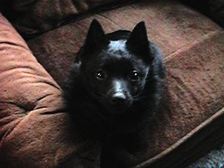

Here there be Schip Pics!
If you have pictures of Schipperkes you'd like to see included here,
send them to baubo@eskimo.com. I can't include everybody's pic, but
I'll put up as many as my server storage will allow. If you have a
pic up on your own page, I'll put a link to it from the "Other Schips
on the Internet Page".
Please, if you send me pics via email, only send one - your best one.
I love seeing your pics, but getting them from downloaded email is
slow on my connection. And remember, give them an unusual name so I can identify
them easily. You wouldn't believe how many schip.gifs I have! :) (You might
consider using your last name instead of the dog's name.)
Thanks!
Here's Sara!
Sara's human is Julie Rampke.
I've had the darndest time getting a picture of my own Schip online, but
finally, here she is. She was born in February of 1995... I wasn't
there at her birth, but I'm positive she was born wiggling frantically.
What I know is that she certainly hasn't stopped!
She's a sweetheart, totally devoted to me, and I love her to pieces (even
if she did flunk basic obedience).
It took me about ten minutes to get her to sit still long enough to snap
this shot... |
 |
Here's Alma:
Alma's human is Rob Hudson.
Here's what he had to say about her...
"This is Alma, my four year old Schipperke. I think she's beautiful, even
if people constantly ask me if she's a pig. Sure, she's got villainous dog
breath and only barks at burglars who ring the doorbell, but she provides
that cheap little ego boost that only a dog can give. Perhaps it is silly
to put your dog on web pages, but here she is, in all her glory. Check out
that wistful look in her eyes. She's probably thinking, "Wow, I sure
would like to eat some poop right now!" |
 |
Here's a picture of Skipper:
Skipper's humans are Bob and Linda DeBula. |
 |
Here's Sandra:
Sandra's human is Holly Jessop.
Sandra has
her
own webpage online, but because she's so unusual (in the US, at least)
I wanted to feature her here on the Schip Pics page too! |
 |
Here's Bevo (pronounced bee-voh)
Bevo's human is Chuck Kronschnabel.
Bevo is showing you how Schips pattycake. |
 |
| This is Admiral Tuggert Behr (Tug for short). He will be 11 years
old on May 29th (1997) and has developed a cute little gray beard as
you can see by his picture. He is our boat dog and he loves going on the
boat and swimming in the Mississippi river. He even has his own raft to float
on. His favorite spot on the boat is on the bow pulpit watching for anything
that might float by. When we camp on the beach we put an accordion style
ladder out for us to get up and down and Tug has learned to climb up it with
ease. He is the Ultimate boat dog!
Tug's humans are Mike & Patti. |
 |
Here's Leo
Leo's human is Roger Hjemberg.
I think Roger told me that Leo is a champion, and looking at his picture,
that's not hard to believe.
And look! He has a tail! |
 |
Here's Taz:
Taz's humans is Jim Hilsheimer.
"I am one way cool dog and I know it! An all black little fur ball.
Maybe 15 pounds (soaking wet) of rompin' stompin' hyper-energy. I've
been told I look a lot like a little teddy bear, but I really am a dog. I'm
called Taz (of course), Tazanente, Tazley,
Spazley, TazMan, Buddybear, Woolybear and sometimes 'the little dog
from Hell' , (but I know I'm loved deeply by Dan & Jim, well, most
the time)." |
 |
| Here is Skipper:
Skipper belongs to Bill, Tina, and Daniel Packer. |
 |
| Here is Clipper:
Clipper's human is JohnC.
"...my 14-year-old CDX and the best all-around dog I've ever owned.
Extraordinarily affectionate, totally confident, not given to bad habits
and still in excellent health. By Valkyra Bearskward Jennifer and CH. Klengaul's
Easy Come, Easy Go." |
 |
| Hi, my name is Elmo. I am a 2 year old Schipperke and yes I am
a trouble maker. Just look in my eyes and you can see it. I am a very smart
trouble maker though. My latest trick is opening the counter in the kitchen
and eating all of the garbage. Oh well, my humans love me despite my flaws
:)
My people are Doug and Alisa Gardner from Vancouver, Canada.
PS - I have a tail! |
 |
Back to the Schipperke
Page.